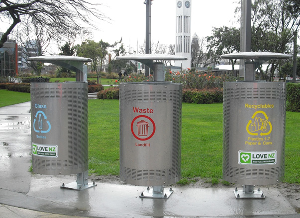

How to recycle
Home Recycling
To properly recycle waste must be sorted into the correct bins. Not all waste can be recycled, and some times similar waste cant even be recycled the same way
Glass Bottles and Jars
These can be recycled by placing them in the blue waste bins
Getting them ready for recycleing
All glass should be rinsed and cleaned of any remaining contents
What glass can i recycle?
Some glass has had added chemicals to its mix. This makes it impossible to use in the glass recycleing proccess.
Unrecycleable glass
- Frosted Glass
- Drinking Glasses
- Mirrors
Yellow bins
Yellow bins are used to recycle a wide varity of waste. These lists should give you a general idea of what you can and cant recycle.
I eat!
- Hard Plastics
- CardBoard Boxes
- Tins and Cans
- Paper
I hate!
- Plastics bags!
- Medical Waste!
- Metal!
- Electronics and Batterys
- Green Waste
- Waste Or Diapers
- Clothes
Public Recycling
Bins
Around Otago you will find bins that allow you to recycle your plastic and glass. You cannot empty your personal bins here.
Bottle Banks
Large bottle banks are avalible. These can be used if you have a mountan of beer bottles overflowing from your blue bins.